Personal Information
Name: Shiv Charan
Email Address:shivcharanmt@gmail.com
Gitter:ShivCharanSharma
GitHub:https://github.com/ShivCharanSharma
Blog:https://codebuddy.code.blog/
Brief Background Information
I am a B.Tech. (4th year) student of Computer Science at Guru Nanak Dev Engineering College, India. Practiced in writing code in C/C++, Python, Java, JavaScript and used Git, Django, Android Development, web development, Embedded C.
I solved an issue with Rebar Addon and here is merged PR:
https://github.com/amrit3701/FreeCAD-Reinforcement/pull/144
I have implemented different types of reinforcement in FreeCAD that can be found at : https://github.com/ShivCharanSharma/FreeCAD-Examples
Project Information
Project Title: Automate Reinforcement Process of Slab and Footing in FreeCAD.
Brief Project Summary
This project is to automate Reinforcement process of slab and footing by using the Reinforcement Workbench in FreeCAD. The idea is to create UI and functions on top of the current implementation to combine different types of Rebars in a single Dialog Box as per the user requirements. For example, combine BentShape and Straight Rebars ( or different types of rebars) in case of Slab and Footing Reinforcement.
Detailed Project Description
Current Scenario
- To create Reinforcement in a Slab or Footing, user needs to do a lot of work like creating Bent shape rebars, distribution rebars/Straight rebars in slab and Stirrup rebars , UShape rebars, straight rebars in case of footing and perform all calculations involved manually.
- If user decides to make changes in any parameter of Slab/Footing Reinforcement like covers of bentShape or Distribution rebars (int slab) or Covers of Stirrup (in footing), he/she needs to manually adjust Cover and Spacing of all Rebars provided. Doing so manually needs efforts never less than applying Reinforcement from scratch and involves lots of calculations. And obviously, there are going to be a number of Slab/Footing in a building and no one wants to apply Reinforcement to all Slab/Footing manually. So, this is a very time consuming task.
- Select the face of the slab and create straight rebars ( Distribution rebars ).
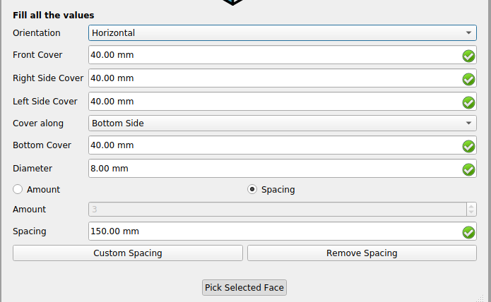
- To create BentShape rebars, first the user needs to select one of the face, perpendicular to the previously selected face and then calculate ‘Front Cover’ and ‘Top/Bottom’ based on the values of Top/Bottom/Left/Right Cover of the distribution rebars.
To create upper distribution bars as shown in below figure.
- User will select face perpendicular to face selected for bentShape rebars, then select straight Rebar. Then calculate Front cover, Top cover based on Top/Bottom/Right/left cover of BentShape rebars.
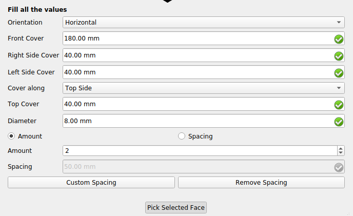
- Then calculate custom spacing for upper distribution rebars.
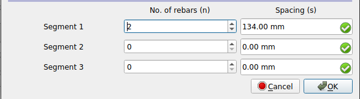
Output:
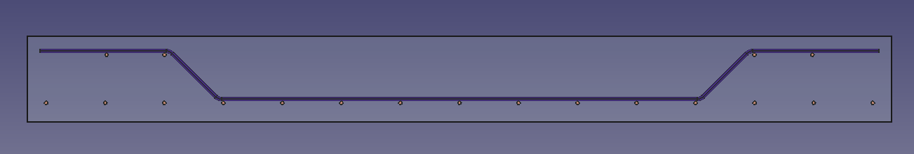
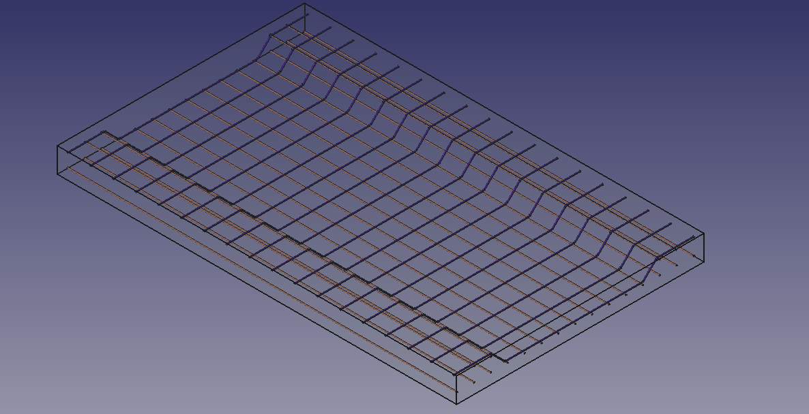
How to solve the problem?
To solve above mentioned issues, an interactive UI will be developed on top of the current implementation of Rebar Addon in FreeCAD.
- Dialog Box will be developed where users will input the required data as per the design requirements.
- When the user will press apply button, this input data will be passed to functions makeBentShapeRebar(), makeStraightRebar(), makeStirrup(), makeLShapeRebar(), makeUShapeRebar() etc. of the Rebar Addon as per the requirements of Slab or Footing reinforcement.
- The Reinforcement will be created using core functionality of the Rebar Addon.
- To edit Reinforcement provided, the user will double click on the created Reinforcement object. Then he/she will be shown the same Dialog Box as while creating Reinforcement. And then users can make changes and apply them as did before.
- There will be a separate Dialog Box for footing reinforcements.
So, the developed UI will contains following features:
- User will add only basic details for Reinforcement and all the calculations (like for cover and spacing of rebars) will be done by script.
- User can create different types of Rebars in a single step. Like creating Bent Shape, Straight rebars in case of slab and Stirrups and Rebars (of different types) for footing reinforcement.
- User can add number of layers and number of Rebars in each layer in slab or footing.
- For Slab and footing Reinforcement, user will be presented with a list of prototypes of some default configurations, which we will choose from “SP 34: Handbook on Concrete Reinforcement and Detailing” as present here:
Due to the time constraints of GSoC, I will implement the following prototypes, but will keep on adding even after GSoC.
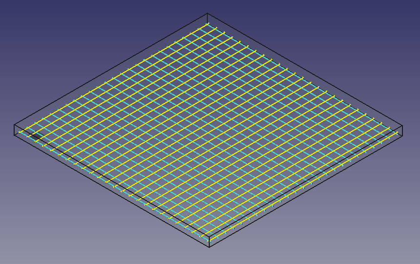
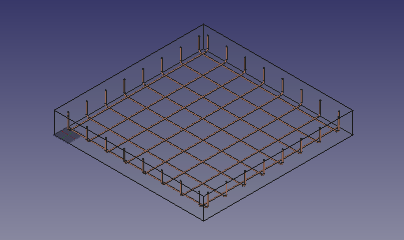
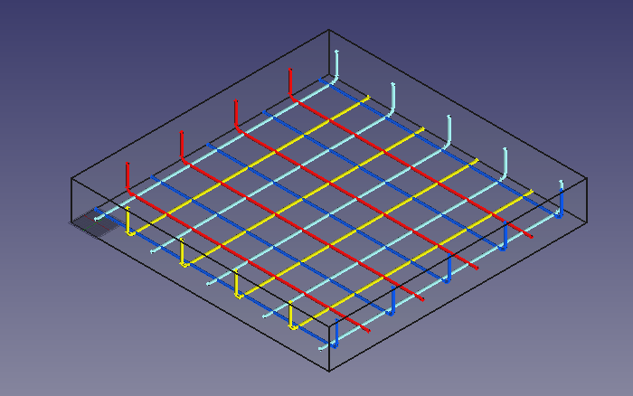

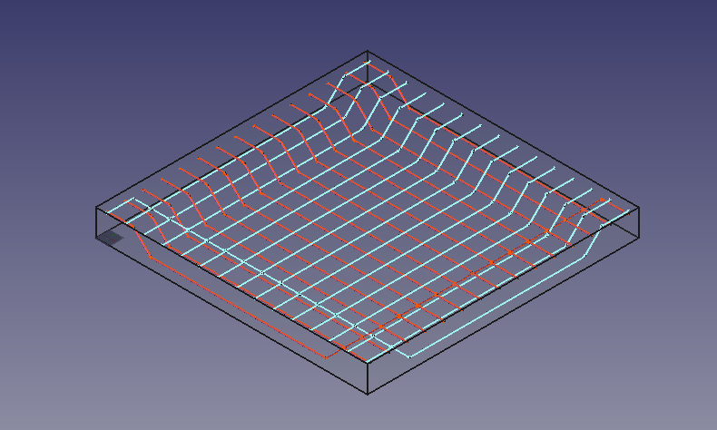
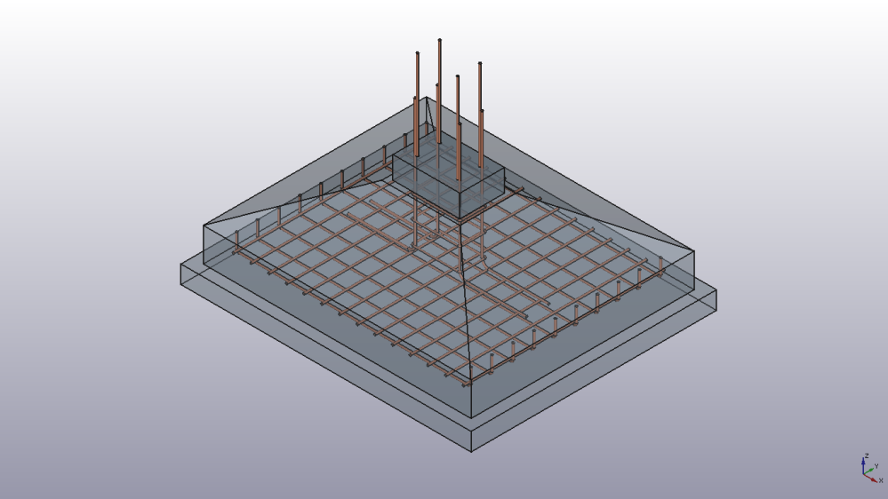
Implementation:
- An icon for slab and footing Reinforcement will be made and integrated in drop down menu of Rebar Addon. Integration in drop down menu can be done by modifying RebarTools.py file of Rebar Addon.
- The dialog box will be developed using QtDesigner. Users will provide input through this dialog box.
- The inputs provided by the user will then be passed to prebuilt
functions of Rebar Addon. Below is the list of that functions:
- makeStraightRebar(f_cover, coverAlong, rt_cover, lb_cover, diameter, amo unt_spacing_check, amount_spacing_value, orientation = "Horizontal", structure = None, facename = None): Adds the straight reinforcement bar to the selected structural object.
- makeUShapeRebar(f_cover, b_cover, r_cover, l_cover, diameter, t_cover, rounding, amount_spacing_check, amount_spacing_value, orientation = "Bottom", structure = None, facename = None): Adds the U-Shape reinforcement bar to the selected structural object.
- makeLShapeRebar(f_cover, b_cover, l_cover, r_cover, diameter, t_cover, rounding, amount_spacing_check, amount_spacing_value, orientation = "Bottom Left", structure = None, facename = None): Adds the L-Shape reinforcement bar to the selected structural object.
- makeBentShapeRebar( f_cover, b_cover, l_cover, r_cover, diameter, t_cover, bentLength, bentAngle, rounding, amount_spacing_check, amount_spacing_value, orientation="Bottom Left", structure=None, facename=None).Adds Bent-Shaped reinforcement bar to the selected structural object.
- makeStirrup(l_cover, r_cover, t_cover, b_cover, f_cover, bentAngle, bentFactor, diameter, rounding, amount_spacing_check, amount_spacing_value, structure = None, facename = None): Adds the Stirrup reinforcement bar to the selected structural object.
Timeline
An overview of working on tasks is as follows.
- Community Bonding Period (17 May - 7 June)
- Having interaction on mailing list and IRC regarding important aspects of the project.
- Get to be more familiar with the code and workflow of FreeCAD and Rebar Addon.
- Learn more about reinforcement in Slab and Footing.
- Learn more about tools that will be used in implementation.
- Learn Doxygen syntax and inkscape.
- 7 June - 7 July (30 days)
- Implement slab (having Straight , U-shaped, L-shaped rebars) reinforcement detailing function for passing user input to prebuilt Rebar Addon functions.
- Create UI for slab reinforcement (having Straight , U-shaped, L-shaped rebars).
- 7 July - 12 July (5 days)
- Backup days for any backlog or pending task and preparation for phase I evaluation.
- 12 July - 16 July (5 days, Phase I evaluation)
- Developer documentation using Doxygen.
- Submitting all the work to mentor.
- 16 July - 25 July (9 days)
- Implement slab (spanning in one or two direction) reinforcement detailing function for passing user input to prebuilt Rebar Addon functions.
- Implement UI for slab spanning in one and two direction reinforcement.
- Create required images and icons using inkscape.
- Integrate UI with Rebar Addon UI.
- 25 July - 9 August (15 days)
- Implement footing reinforcement detailing function for passing user input to prebuilt Rebar Addon functions.
- Create UI for footing reinforcement.
- 9 August - 16 August (1 week)
- Work on UI enhancement to improve user experience.
- Work on backlogs and bug fixes.
- 16 August - 23 August (8 days, Final evaluation)
- Developer documentation using Doxygen.
- Submitting all the work to mentor.
- User documentation through detailed tutorial and post on FreeCAD wiki with screenshots.
Future Scope:
For slab reinforcement, we can have the following prototypes also and much more.
https://archive.org/details/gov.in.is.sp.34.1987/page/n137/mode/2up : 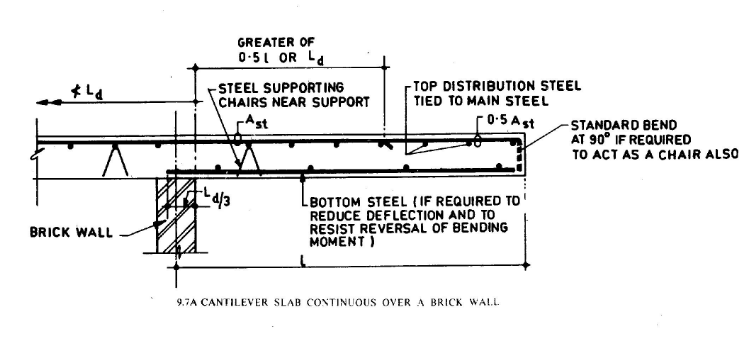
For Footing reinforcement, we can have the following prototypes also and much more.
https://archive.org/details/gov.in.is.sp.34.1987/page/n81/mode/2up :
Time Availability
I will be able to dedicate 40 hours per week. As this is my training semester I can dedicate my 6-7 hours per day. And as there will be only one exam day in this semester which will be completed in May month. So I will be available full time to work on this project. Also, my graduation will be completed in June, thus there will not be any time constraint from college and I can dedicate my full time to this project.
Why FreeCAD?
The very first reason that makes me curious about FreeCAD is the flexibility and automation that it provides to its users to create complex designs efficiently and with a simplified design process. Users can utilize features from a wide variety of workbenches while working on a design and can easily switch and manage them. FreeCAD has a well-established community of excellent coders and engineers of respective domains and this project will give me an opportunity to work with them. So, this project will provide me a wide variety of learning opportunities.
Why you?
I am a software engineering studententhusiast, and have a good programming skill in C/C++, Python, Data Structure and Algorithms. I like to use my skill to bring automation to different tasks and try to help people to ease their work with automation. I like to do challenging tasks in programming and explore new things. I will also contribute actively and maintain the code even after GSoC and will work on adding new features in FreeCAD.